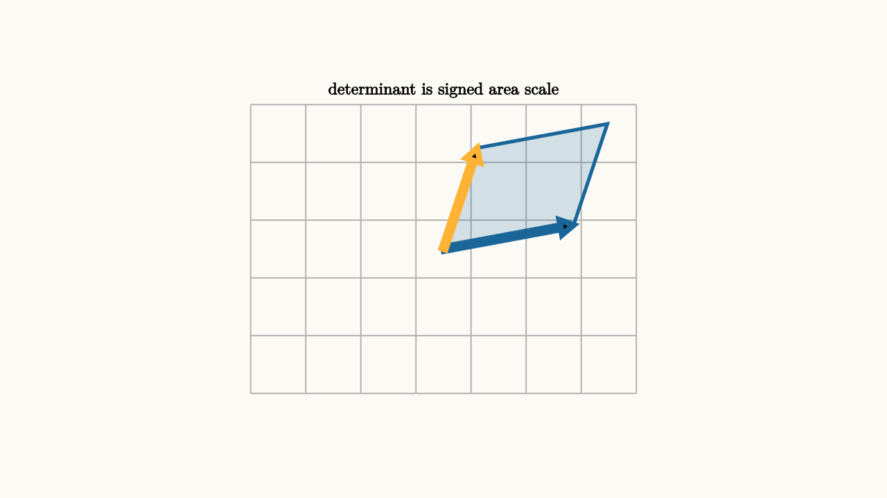

Determinants Track Oriented Volume
A matrix moves the entire plane or space. The determinant answers one global question: how does that motion scale volume?
In two dimensions, volume means area. Start with the unit square. A matrix sends the two basis vectors to two new vectors. The unit square becomes a parallelogram. The area of that parallelogram is the absolute value of the determinant.
For
the determinant is
The sign records orientation. A positive determinant preserves the counterclockwise order of the basis directions. A negative determinant flips the plane. A determinant of zero collapses area completely.

source
background = [0.985, 0.98, 0.955, 1]
camera = Camera(4.6b)
let a = [1.35, 0.25, 0]
let b = [0.35, 1.05, 0]
mesh diagram = block {
. stroke{LIGHT_GRAY, 1.1} LineGrid([-2, 2, 8], [-1.5, 1.5, 6], 1)
. fill{alpha{0.18} BLUE} stroke{BLUE, 3} Polygon([[0, 0, 0], a, a + b, b])
. stroke{BLUE, 5} Arrow(start: [0, 0, 0], end: a)
. stroke{ORANGE, 5} Arrow(start: [0, 0, 0], end: b)
. center{[0, 1.65, 0]} color{BLACK} Text("determinant is signed area scale", 0.62)
}The determinant is multiplicative:
This is exactly what area scaling should do. If $B$ triples area and then $A$ doubles area, the combined motion scales area by $6$. The sign works the same way. Two flips restore orientation, so two negative determinants multiply to a positive determinant.
The formula $ad-bc$ can be read from two competing rectangles. The term $ad$ measures one diagonal contribution, and $bc$ measures the opposing contribution. When the column vectors point nearly along the same line, these contributions almost cancel. The parallelogram becomes thin, and the determinant moves toward zero. When the columns spread out, the signed area grows.
For two vectors
the determinant
is positive when turning from $u$ to $v$ is counterclockwise through the smaller angle. It is negative when that turn is clockwise. The determinant is therefore a signed area, not just a size.
source
background = [0.985, 0.98, 0.955, 1]
camera = Camera(4.7b)
let Cell = |a, b, col, label| block {
. fill{alpha{0.16} col} stroke{col, 3} Polygon([[0, 0, 0], a, a + b, b])
. stroke{BLUE, 4} Arrow(start: [0, 0, 0], end: a)
. stroke{ORANGE, 4} Arrow(start: [0, 0, 0], end: b)
. center{[0, 1.65, 0]} color{BLACK} Text(label, 0.62)
}
"unit area"
mesh cell = Cell([1, 0, 0], [0, 1, 0], BLUE, "unit square has determinant 1")
play Write(0.8)
"stretch and shear"
cell = Cell([1.45, 0.25, 0], [0.25, 0.95, 0], GREEN, "positive determinant preserves orientation")
play Trans(1.1)
"flip orientation"
cell = Cell([1.45, 0.25, 0], [0.25, -0.95, 0], ORANGE, "negative determinant flips orientation")
play Trans(1.1)
"collapse"
cell = Cell([1.35, 0.3, 0], [0.68, 0.15, 0], RED, "determinant zero collapses area")
play Trans(1.1)The zero case deserves special attention. If the determinant is zero, the transformed basis vectors become dependent. The parallelogram collapses to a segment or a point. The matrix loses dimension, so it cannot have an inverse. There is no way to recover a full two-dimensional input from a one-dimensional shadow.
This links determinant to equation solving. A $2\times 2$ linear system has a unique solution exactly when the coefficient matrix has nonzero determinant. The two equations represent two lines. A nonzero determinant means the normal directions are independent enough for the lines to meet at one point. A zero determinant means the system has either no solution or infinitely many, depending on whether the lines are parallel distinct or the same line.
In three dimensions, the determinant measures signed volume. The unit cube becomes a parallelepiped. Its volume scale is $|\det A|$. A negative sign means the transformation changes handedness, like switching from a right-handed coordinate system to a left-handed one.
The determinant is often introduced as a formula, but the formula is a compact way to track a physical effect. Every linear transformation carries a local measuring box around with it. The determinant tells how the box's volume changes, and the sign tells whether the orientation survived.
This physical effect is the reason determinants appear in change of variables. If a transformation sends tiny squares in the $uv$-plane to tiny parallelograms in the $xy$-plane, then integrals must scale by the area factor:
Here $J$ is the Jacobian matrix of the transformation. The determinant tells how much a tiny measuring box expands or shrinks near a point. In a linear transformation, that scale is the same everywhere. In a nonlinear transformation, the Jacobian determinant gives the local version.
Determinants also detect degeneracy. If three points in the plane form a triangle, the signed area can be written with a determinant. If the determinant is zero, the points are collinear. In computational geometry, this sign test decides whether one point lies to the left or right of a directed edge. In physics, a zero determinant can signal a constraint that collapses degrees of freedom. In algebra, a zero determinant means a linear map has lost information.
The unifying picture is a moving box. Watch what happens to its area or volume. If it expands, the determinant grows in magnitude. If it flips, the sign changes. If it flattens, the determinant becomes zero.